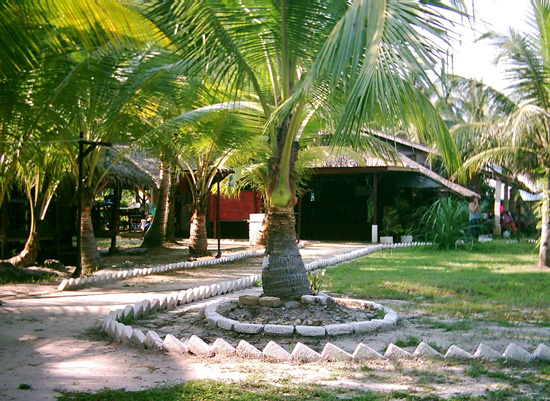
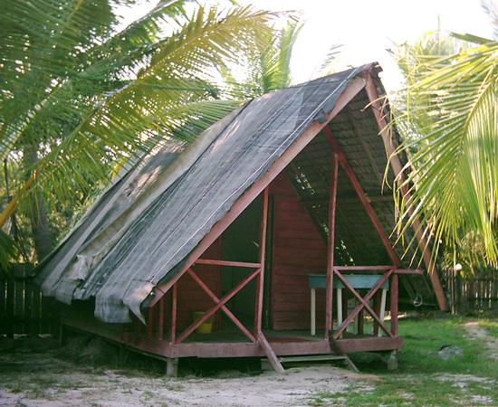
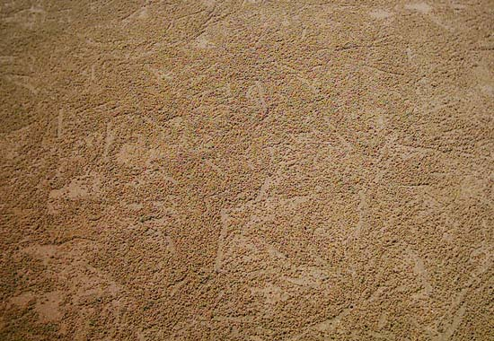
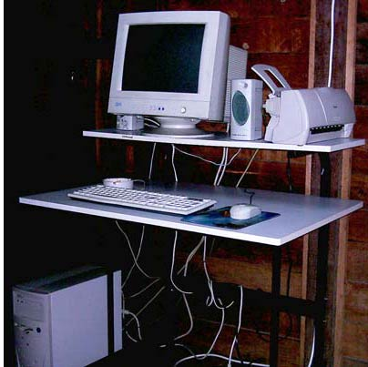

Malaysia Trav-E-Logs©
| Malaysia's East Coast |  |
| back: Tioman | Maznah's Guest House Grounds |
================================= Cherating is one of those places where backpackers stop for a day or two and leave after a week or two. To fill the void in between are things like walks along the beach at sunset, taking a swim in the South China Sea, honing Culinary skills, or learning how to hand-paint batik. =================================August 15 - 18, 2003
Heading north after visiting Tioman, the next town of any size is Kuantan. After taking a photo of the Masjid Negeri, not much else held my interest, so hopped a local bus to Cherating, a coastal community with a significant year-round expat presence. When the bus pulled over to let me off for Cherating, the puzzled look on my face was obvious. The driver pointed down a side street, and off he went. The walk down the side street was not long; just around a gentle bend in the road, the first two of many guesthouses could be seen. The first one included some old, beat-up A-frame bungalows, so I walked in Maznah's gate. The place had recently re-opened under new management, after being closed for an extended period. Guests were allowed to cook and use the fridge, and often would cook community meals. The only single/double left was the most run-down looking A-frame, but decided to give it a try anyway.
 Over the next few days we had several community meals and I put together Maznah's first computer system. The proprietor was making great strides in cleaning up the place and making improvements as well. He showed me where they were getting ready to put a dorm in, upgrade the roofs, and build a few more bungalows. He seems to have everything going for him, including proper attitude.
But all good things must come to an end, and soon I too was back on the road, hitching rides and taking local buses north after wishing him the best of luck.
Next significant stop will probably be Kuala Besut, the Port for the Perhentians.
Photos, clockwise from top right: Kuantan Masjid; A-Frame Guesthouse; Maznah's first computer; Crab tracks on the beach.
|  |
Enjoy!
Bill
------------------------------
Email me at the juno.com address "dancer2SEAsia"
"Travel is Fatal to Bigotry, Prejudice, and Narrow-minded ness" .... attributed to Mark Twain
| next: Return to the Perhentians |
| back: Tioman |